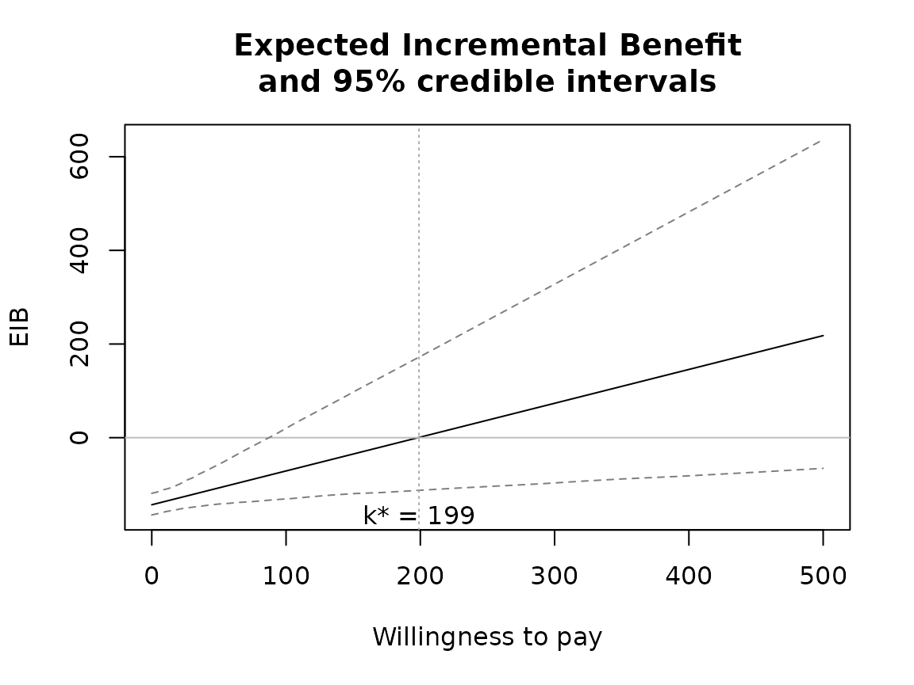
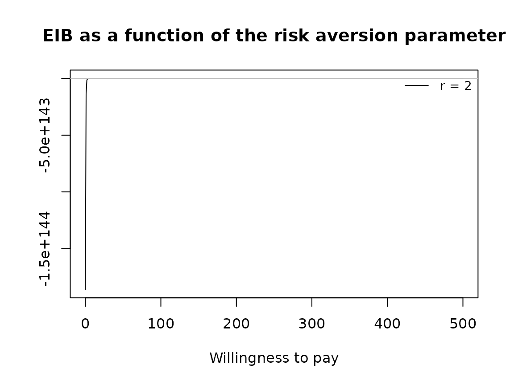
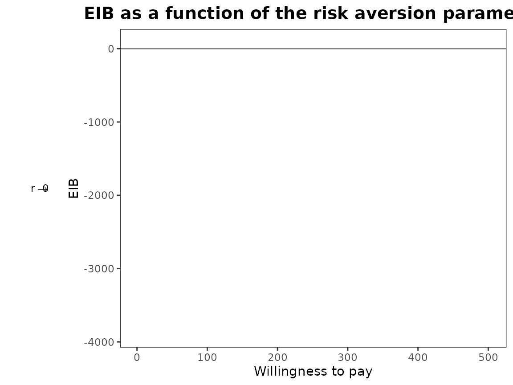

Set-up analysis using smoking cessation data set.
data(Smoking)
treats <- c("No intervention", "Self-help", "Individual counselling", "Group counselling")
bcea_smoke <- bcea(eff, cost, ref = 4, interventions = treats, Kmax = 500)Run the risk aversion analysis straight away with both the base R and ggplot2 versions of plots.


plot(bcea_smoke, graph = "ggplot")
Notice that the first value is asymptotically zero but the function handles that for us. Previously, you had to use something like 1e-10 which was a bit awkward.
Now we modify the comparison group so that it doesn’t contain 2 (“self-help”) anymore. We still keep the same first comparison though “no intervention”.
setComparisons(bcea_smoke) <- c(1,3)If we rerun the analysis we should see that the output is exactly the same.


plot(bcea_smoke, graph = "ggplot")

What happens when we only have one risk adjustment value? Set it to
zero so this should be exactly the same as the baseline
bcea case.


plot(bcea_smoke, graph = "ggplot")

bcea_smoke0 <- bcea(eff, cost, ref = 4, interventions = treats, Kmax = 500)
eib.plot(bcea_smoke0, comparison = 1)
evi.plot(bcea_smoke0)
Check that unusual or meaningless values for r are
handled gracefully. At present the are just calculated and plotting
exactly the same way. should we limit values?



If we select a new set of comparison interventions what will happen?
There are specified in a different order and for other plots this makes
very little difference (perhaps changing the line types). However, it is
different for CEriskav() because only the first comparison
intervention is plotted so changing the order changes the plot. We can
see this by swapping “non intervention” and “individual counselling”
interventions from the analysis above.
setComparisons(bcea_smoke) <- c(3,1)

plot(bcea_smoke, graph = "ggplot")

The previous version of CEriskav() had a
comparison argument where you could specify the single
intervention to plot and if this wasn’t set then it defaulted to the
first. It seems neater to separate the definition of the analysis with
the plotting so now if you did want to specify a different comparison
intervention when using CEriskav() then you would have to
use setComparison() first and then call the plotting
function.
Check legend position argument:


plot(bcea_smoke, pos = TRUE)

plot(bcea_smoke, pos = FALSE)

plot(bcea_smoke, pos = "topleft")
plot(bcea_smoke, pos = "topright")
plot(bcea_smoke, pos = "bottomleft")

plot(bcea_smoke, pos = "bottomright")


plot(bcea_smoke, graph = "ggplot", pos = TRUE)

plot(bcea_smoke, graph = "ggplot", pos = FALSE)

plot(bcea_smoke, graph = "ggplot", pos = "top")

plot(bcea_smoke, graph = "ggplot", pos = "bottom")

plot(bcea_smoke, graph = "ggplot", pos = "left")
plot(bcea_smoke, graph = "ggplot", pos = "right")